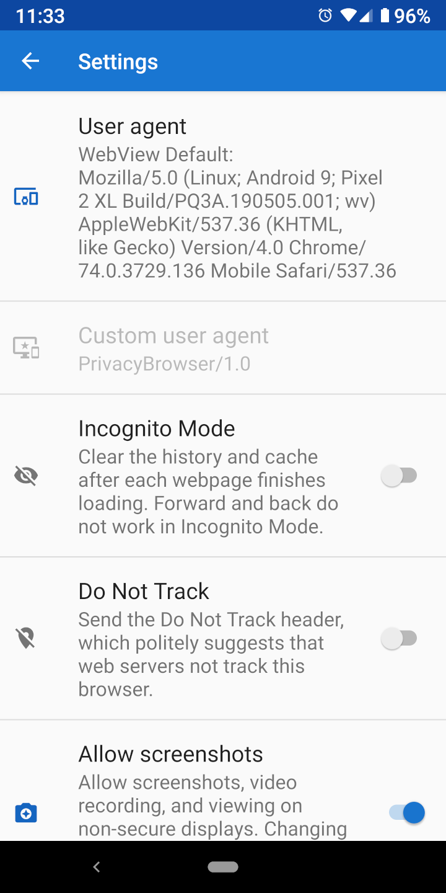

Browser Identification Browser Identification
Browser Identification Browser IdentificationWhen web browsers connect to websites, they send a user agent, which identifies the browser and the rendering capabilities it possesses. The web server can use this information to decide which version of the website to send to the browser. For example, many websites have different versions for desktop and mobile browsers.
By default, Privacy Browser uses its own user agent, which is PrivacyBrowser/1.0. This sends a minimum of information to the web server. Because web servers do not recognize this to be a mobile user agent, they typically display the desktop version of the site.
By comparison, WebView’s default user agent divulges a large amount of information about the hardware and software of the device. On the Settings screen, selecting WebView Default as the User agent displays the user agent that will be sent. The screenshot below shows a Nexus 6P running Android 7.1.1 with Android System WebView 55.0.2883.91 installed. Most web servers will recognize this as a mobile browser and will display the mobile version of the site if they have one.
There is enough information in the user agent that sometimes only a few visitors to a website will be the same. If the user agent is combined with another piece of non-unique identifying information, often it results in a unique fingerprint. The Electronic Frontier Foundation created a tool called Panopticlick to demonstrate how much information can be gleaned from these sources. If this test is run with JavaScript enabled the amount of information that is disclosed increases greatly. Browser Leaks and Am I Unique are also good sources of information.

There are several preset user agents that match common browsers and operating systems. For browser fingerprinting purposes, anything that is rare is easier to track. If Privacy Browser becomes common and many people use PrivacyBrowser/1.0 as their user agent, it will be a good choice for privacy. Firefox or Chrome are the most common user agents, but they auto-update and their version numbers change so quickly that it is likely the user agents included in Privacy Browser will often be out of step with the majority of user agents in the server logs.
Android’s WebView does not allow the user agent to be blank. If it is, WebView simply sends the default user agent to the server.